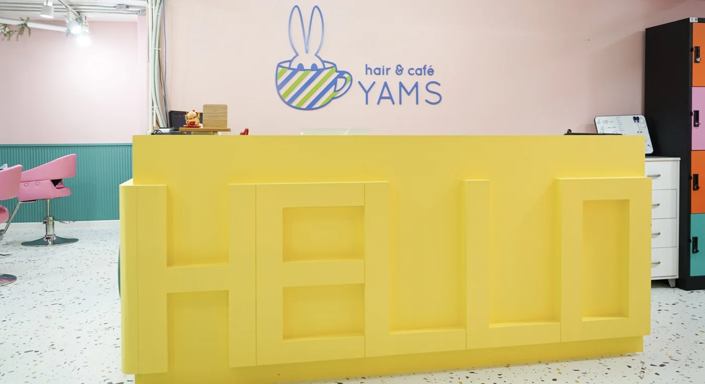
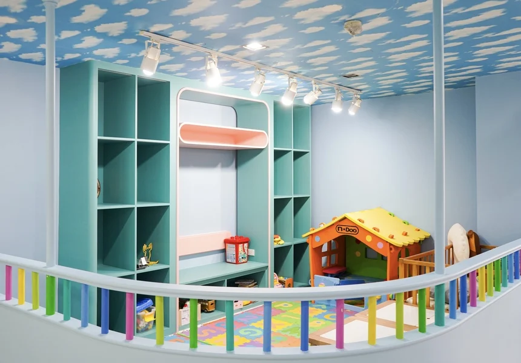
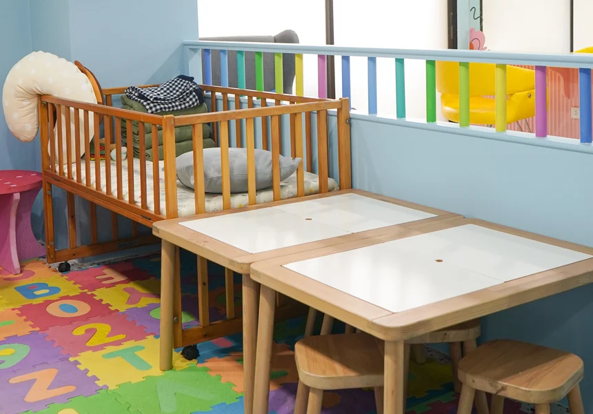
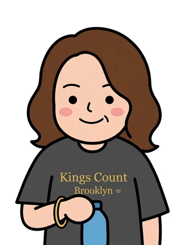
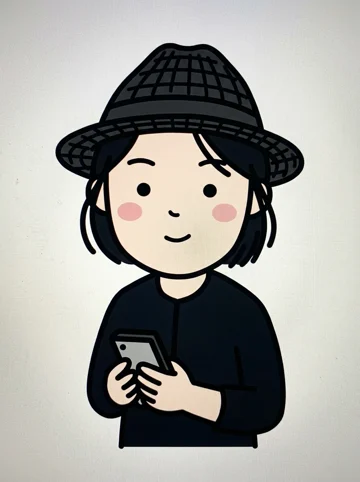

01
お子様が見える、専用のお部屋。
お子様とご一緒にご来店されるお客様専用の「キッズルーム」。他のお客様を気にすることなく、お子様に目が届くお席で施術をお受けいただけます。
HAIR & CAFE · BANGKOK
忙しいお母さんが、
少しでもホッとひと息つける。
バンコク・スクンビット49 / 11
ベビーシッター常駐 / キッズルームをご用意



 A LITTLE TIME FOR YOU.
A LITTLE TIME FOR YOU.02 / ABOUT YAMS
「赤ちゃん連れではなかなか美容室に行けない。」
「子育て中はゆっくりお茶もできない」
YAMS（ヤムズ）では子育て世代のお母さんの声を聞いてお店創りをしています。
子育て中はなかなか自分の時間が持てないですよね。いつもがんばっているお母さんのキレイでいたい気持ちをYAMSは応援します！
親子で通いやすい理由 ↓03 / KID’S AREA
お子さまが「行きたくなる」ヘアサロン。
小さなお子様とご一緒でも、
ご安心しておまかせください。
お子様とご一緒にご来店されるお客様専用の「キッズルーム」。他のお客様を気にすることなく、お子様に目が届くお席で施術をお受けいただけます。

施術中は、ベビーシッターがお子様のお世話をさせていただきます。小さなお子様とご一緒でもご安心しておまかせください。

ベビーベッド・おむつ替え台など、小さなお子様と過ごすための設備も。お子様に目が届く範囲に席をご用意しております。
04 / CAFE TIME
YAMSでの施術が
ひと時のリラクゼーションへ。
2026年9月の掲載内容
手作りスイーツと、くつろぎの時間。

06 / OUR STAFF
小さなお子様とご一緒でも
ご安心しておまかせください。




07 / ACCESS & RESERVATION
183 Soi Sukhumvit 49/11, Khlong Tan Nuea,
Watthana, Bangkok 10110
「Prime Mansion Promsri」2階
1階入口からインターホンを押し、お入りください。
Prime Mansion Promsri · 2F
A hair salon for parents and children. Kids’ room and babysitter available.
Prime Mansion Promsri, 2nd floor, 183 Soi Sukhumvit 49/11, Bangkok 10110. Please ring the intercom at the ground-floor entrance.
Open 9:00–18:00 (Bangkok time). Closed Wednesdays and the 2nd & 4th Thursdays of each month.
ร้านทำผมสำหรับคุณแม่และลูก มีห้องเด็กและพี่เลี้ยงเด็ก
ชั้น 2 Prime Mansion Promsri เลขที่ 183 ซอยสุขุมวิท 49/11 แขวงคลองตันเหนือ เขตวัฒนา กรุงเทพฯ 10110 กรุณากดอินเตอร์คอมที่ทางเข้าชั้น 1
เปิด 9:00–18:00 น. (เวลาไทย) หยุดทุกวันพุธ และวันพฤหัสบดีครั้งที่ 2 และ 4 ของเดือน